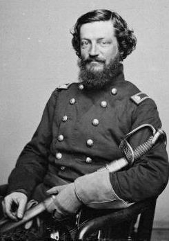

A question before we start
Do non-members get saved?
YesNoIt’s complicated
A question before we start
Do non-members get saved?
Hold your answer. Second question —
Then why does the Lord keep trusting non-members with His work?
Story one
Babylon, 539 BC
Scripture
“That saith of Cyrus, He is my shepherd, and shall perform all my pleasure: even saying to Jerusalem, Thou shalt be built; and to the temple, Thy foundation shall be laid.”
Isaiah wrote this man’s name about 150 years before he was born.
Isaiah 44:28
God’s title for this pagan king
The Hebrew word is mashiach — Messiah. Exactly one non-Israelite in the entire Old Testament gets that word.
Scripture
“Thus saith the Lord to his anointed, to Cyrus, whose right hand I have holden… I have called thee by thy name… though thou hast not known me.”
God says it Himself: this man doesn’t know Me. He sent the captives home and helped pay for the temple anyway.
Isaiah 45:1, 4
Story two
Far West, Missouri · November 1838
The order
Maj. Gen. Samuel Lucas · Missouri militia
To Brigadier General Alexander Doniphan — November 1838
“Sir: You will take Joseph Smith and the other prisoners into the public square of Far West, and shoot them at 9 o’clock to-morrow morning.”
The reply
Brig. Gen. Alexander Doniphan — not a member. Never joined.
His answer to a direct order from his commanding officer
“It is cold-blooded murder. I will not obey your order. My brigade shall march for Liberty to-morrow morning, at 8 o’clock; and if you execute these men, I will hold you responsible before an earthly tribunal, so help me God.”
Nobody was shot
No Liberty Jail letters. No Nauvoo. No temple. The Lord trusted the prophet’s life to a man who thought the Church was strange — and trusted him to say no to his own general.
Story three
Winter, 1857 — the U.S. Army is marching on Utah.

Thomas L. Kane
Philadelphia lawyer · not a member · never joined
He crossed the country in winter under a fake name — “Dr. Osborne” — walked into Brigham Young’s office, then into the Army’s camp, and talked both sides out of a war. He spent thirty years and his family fortune defending a church he never joined.
There’s a county in Utah named after him. Most members have never heard his name.
So He clearly uses them
But that’s not what you asked. You asked if He saves them.
The visitors
Wilford Woodruff, temple president, said the signers of the Declaration of Independence appeared to him — with a complaint.
As Wilford Woodruff told it
Wilford Woodruff · September 1877
Recounting what the founders said to him in the St. George Temple
“We laid the foundation of the government you now enjoy, and we never apostatized from it, but we remained true to it and were faithful to God… why have you not redeemed us?”
Days later, he went to the font and was baptized on their behalf.
The doctrine — given as a story about Joseph’s brother Alvin, who died before the Church existed
“All who have died without a knowledge of this gospel, who would have received it if they had been permitted to tarry, shall be heirs of the celestial kingdom of God.”
Doctrine and Covenants 137:7
Same question. Vote again.
Do non-members get saved?
And the last chapter runs through a font, written by people your age.